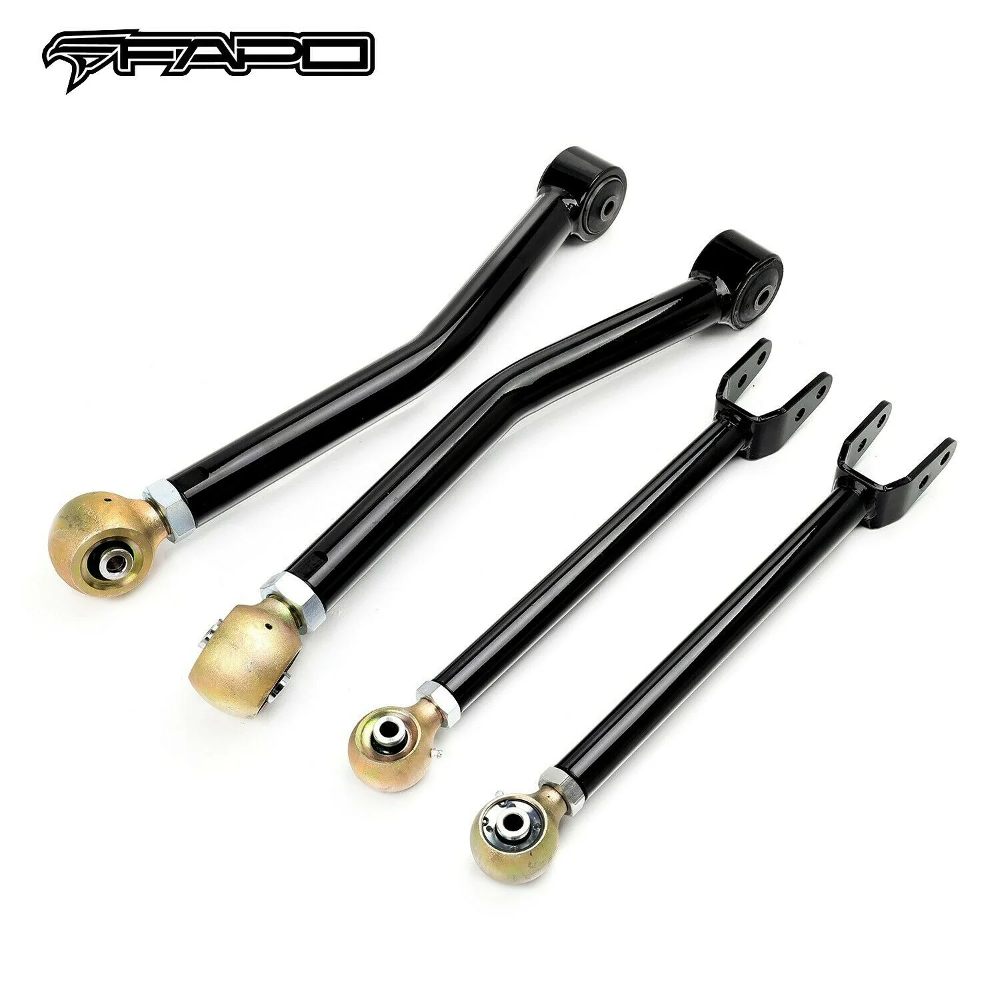

1 / 5Front Adjustable wahaczs Do Jeep Wrangler 07-18 JK 0-6 in Lift Kit 4 Pcs FZ060110+FZ060130
Charakterystyka przedmiotu: Stan: schorzenie: Nowy Umieszczenie na pojeździe: Przód, lewo, prawo, góra, dół Typ: Zestaw wahaczy Uniwersalne dopasowanie: NIE Elementy zawarte: Ramię sterujące Styl montażu: Przykręcane Otwór na zawleczkę: NIE Tworzywo: Stal stopowa Długość przedmiotu: Aktualizowanie Waga przedmiotu: Aktualizowanie Część wydajnościowa: Tak Część zabytkowego samochodu: NIE Cechy produktu: 100% dokładnoś…
Item Specifics: Condition: New Placement on Vehicle: Front, Left, Right, Upper, Lower Type: Control Arm Kit Universal Fitment: No Items Included: Control Arm Mounting Style: Bolt-On Cotter Pin Hole: No Material: Alloy Steel Item Length: Updating Item Weight: Updating Performance Part: Yes Vintage Car Part: No Features: 100% Accuracy of Fit, Adjustable, Easy to Replace, Greasable, No Drilling Required Part Type: Suspension Lift Kit Fitment Type: Performance/Custom Modified Item: Yes Adjustable: Yes Lift Height: 6" Front Greasable or Sealed: Greasable Custom Bundle: Yes Included Hardware: Control Arm Brand: FAPO UPC: Does not apply Manufacturer Part Number: FZ060110+FZ060130 Manufacturer Warranty: 1 Year Interchange Part Number: Modified Custom Adjustable 0-6" Inches Lift Height Control Arms Other Part Number: Suspension Control Arms Kits and With Ball Joints Assembly Superseded Part Number: Front Pair Driver and Passenger Side Left Right FL FR Hand Packing List: 1X Front Left Upper Control Arm 1X Front Left Lower Control Arm 1X Front Right Upper Control Arm 1X Front Right Lower Control Arm Item Specifics: OEM Control Arms Replacements With Accommodate 0-6" Lift. Rust & Corrosion Protection Performance Proprietary Dual Layers Coating. Heavy Duty Tubular Alloy Steel For Any Off-Road Conditions. Cold Resistant Rubber Bushings for Extra Endurance. Improved Suspension Geometry To Reduce Bump Steer. Compatibility Chart: Jeep Wrangler: 70th Anniversary Sport Utility 2-Door 3.8L 2011 75th Anniversary Sport Utility 2-Door 3.6L 2016 Altitude Sport Utility 2-Door -- 2014 Altitude Sport Utility 4-Door -- 2014 Freedom Edition Sport Utility 2-Door -- 2014-2015 Freedom Edition Sport Utility 4-Door -- 2014-2015 Islander Sport Utility 2-Door 3.8L 2010 Polar Edition Sport Utility 2-Door -- 2014 Polar Edition Sport Utility 4-Door -- 2014 Rubicon: Rubicon Sport Utility 2-Door 2.0L 2018 Rubicon Sport Utility 2-Door 3.6L 2012-2018 Rubicon Sport Utility 2-Door 3.8L 2007-2011 Sahara: Sahara Sport Utility 2-Door 3.6L 2012-2017 Sahara Sport Utility 2-Door 3.8L 2007-2011 Sport S: Sport S Sport Utility 2-Door 2.0L 2018 Sport S Sport Utility 2-Door 3.6L 2016 Sport: Sport Sport Utility 2-Door 2.0L 2018 Sport Sport Utility 2-Door 3.6L 2012-2018 Sport Sport Utility 2-Door 3.8L 2010-2011 Unlimited: Unlimited 70th Anniversary Sport Utility 4-Door 3.8L 2011 Unlimited 75th Anniversary Sport Utility 4-Door 3.6L 2016 Unlimited Altitude Sport Utility 4-Door 3.6L 2012 Unlimited Black Bear Sport Utility 4-Door 3.6L 2016 Unlimited Dragon Edition Sport Utility 4-Door -- 2014 Unlimited Hard Rock Sport Utility 4-Door 3.6L 2015 Unlimited Moab Sport Utility 4-Door 3.6L 2018 Unlimited Mountain Sport Utility 4-Door 3.6L 2012 Unlimited Mountain Sport Utility 4-Door 3.8L 2010 Unlimited Rubicon: Unlimited Rubicon Sport Utility 4-Door 2.0L 2018 Unlimited Rubicon Sport Utility 4-Door 3.6L 2012-2018 Unlimited Rubicon Sport Utility 4-Door 3.8L 2007-2011 Unlimited Sahara: Unlimited Sahara Sport Utility 4-Door 2.0L 2018 Unlimited Sahara Sport Utility 4-Door 3.6L 2012-2018 Unlimited Sahara Sport Utility 4-Door 3.8L 2007-2011 Unlimited Sport S: Unlimited Sport S Sport Utility 4-Door 2.0L 2018 Unlimited Sport S Sport Utility 4-Door 3.6L 2016 Unlimited Sport: Unlimited Sport Sport Utility 4-Door 2.0L 2018 Unlimited Sport Sport Utility 4-Door 3.6L 2012-2018 Unlimited Sport Sport Utility 4-Door 3.8L 2010-2011 Unlimited X: Unlimited X Sport Utility 4-Door 3.8L 2007-20
1599,99 PLN
Opis produktu
Charakterystyka przedmiotu:
- Stan: schorzenie:Nowy
- Umieszczenie na pojeździe:Przód, lewo, prawo, góra, dół
- Typ:Zestaw wahaczy
- Uniwersalne dopasowanie:NIE
- Elementy zawarte:Ramię sterujące
- Styl montażu:Przykręcane
- Otwór na zawleczkę:NIE
- Tworzywo:Stal stopowa
- Długość przedmiotu:Aktualizowanie
- Waga przedmiotu:Aktualizowanie
- Część wydajnościowa:Tak
- Część zabytkowego samochodu:NIE
- Cechy produktu:100% dokładność dopasowania, regulacja, łatwa wymiana, smarowanie, nie wymaga wiercenia
- Typ części:Zestaw do podnoszenia zawieszenia
- Typ dopasowania:Wydajność/niestandardowe
- Zmodyfikowany element:Tak
- Nastawny:Tak
- Wysokość podnoszenia:6" Przód
- Smarowane lub uszczelnione:Smarowane
- Pakiet niestandardowy:Tak
- Dołączony sprzęt:Ramię sterujące
- Marka:FAPO
- UPC:Nie dotyczy
- Numer części producenta:FZ060110+FZ060130
- Gwarancja producenta:1 rok
- Numer części zamiennej:Zmodyfikowane niestandardowe regulowane ramiona sterujące wysokością podnoszenia w zakresie 0–6 cala
- Inny numer części:Zestawy wahaczy zawieszenia i zespół przegubów kulowych
- Zastąpiony numer części:Przednia para Strona kierowcy i pasażera Lewa Prawa FL FR Ręka
Lista pakowania:
- 1X Przednie lewe górne ramię sterujące
- 1X przednie lewe dolne ramię sterujące
- 1X przednie prawe górne ramię sterujące
- 1X przednie prawe dolne ramię sterujące
Charakterystyka przedmiotu:
- Zamienniki wahaczy OEM z możliwością podnoszenia 0-6 cala.
- Zastrzeżona dwuwarstwowa powłoka zapewniająca ochronę przed rdzą i korozją.
- Wytrzymała rurowa stal stopowa do każdych warunków terenowych.
- Odporne na zimno tuleje gumowe zapewniające dodatkową wytrzymałość.
- Ulepszona geometria zawieszenia w celu zmniejszenia sterowności na nierównościach.
Tabela kompatybilności:
Jeep Wrangler:
- 70. rocznica Sport Utility 2-drzwiowy 3.8L 2011
- 75. rocznica Sport Utility 2-drzwiowy 3.6L 2016
- Altitude Sport Utility 2-drzwiowe - 2014
- Altitude Sport Utility 4-drzwiowe - 2014
- Freedom Edition Sport Utility 2-drzwiowe - 2014-2015
- Freedom Edition Sport Utility 4-drzwiowe - 2014-2015
- Islander Sport Utility 2-drzwiowy 3,8 l 2010
- Wersja Polar Sport Utility 2-drzwiowa – 2014
- Wersja Polar Sport Utility 4-drzwiowa – 2014
Rubikon:
- Rubicon Sport Utility 2-drzwiowy 2.0L 2018
- Rubicon Sport Utility 2-drzwiowy 3,6 l 2012-2018
- Rubicon Sport Utility 2-drzwiowy 3.8L 2007-2011
Sahara:
- Sahara Sport Utility 2-drzwiowy 3.6L 2012-2017
- Sahara Sport Utility 2-drzwiowy 3.8L 2007-2011
Sport S:
- Sport S Sport Utility 2-drzwiowy 2.0L 2018
- Sport S Sport Utility 2-drzwiowy 3,6 l 2016
Sport:
- Sport Sport Utility 2-drzwiowy 2.0L 2018
- Sport Sport Utility 2-drzwiowy 3,6 l 2012-2018
- Sport Sport Utility 2-drzwiowy 3,8 l 2010-2011
Nieograniczony:
- Nieograniczona 70. rocznica Sport Utility 4-drzwiowy 3.8L 2011
- Unlimited 75. rocznica Sport Utility 4-drzwiowy 3.6L 2016
- Unlimited Altitude Sport Utility 4-drzwiowy 3,6 l 2012
- Nieograniczony Black Bear Sport Utility 4-drzwiowy 3,6 l 2016
- Unlimited Dragon Edition Sport Utility 4-drzwiowe – 2014
- Nieograniczony Hard Rock Sport Utility 4-drzwiowy 3,6 l 2015
- Nieograniczony Moab Sport Utility 4-drzwiowy 3,6 l 2018
- Nieograniczony Mountain Sport Utility 4-drzwiowy 3,6 l 2012
- Nieograniczony Mountain Sport Utility 4-drzwiowy 3,8 l 2010
Nieograniczony Rubikon:
- Nieograniczony Rubicon Sport Utility 4-drzwiowy 2.0L 2018
- Nieograniczony Rubicon Sport Utility 4-drzwiowy 3,6 l 2012-2018
- Nieograniczony Rubicon Sport Utility 4 drzwi 3,8 l 2007-2011
Nieograniczona Sahara:
- Nieograniczony Sahara Sport Utility 4-drzwiowy 2.0L 2018
- Nieograniczony Sahara Sport Utility 4 drzwi 3,6 l 2012-2018
- Nieograniczony Sahara Sport Utility 4 drzwi 3.8L 2007-2011
Nieograniczony sport S:
- Unlimited Sport S Sport Utility 4-drzwiowy 2.0L 2018
- Unlimited Sport S Sport Utility 4-drzwiowy 3,6 l 2016
Nieograniczony sport:
- Unlimited Sport Sport Utility 4-drzwiowy 2.0L 2018
- Nieograniczony Sport Sport Utility 4-drzwiowy 3,6 l 2012-2018
- Nieograniczony Sport Sport Utility 4-drzwiowy 3.8L 2010-2011
Nieograniczony X:
- Nieograniczony X Sport Utility 4-drzwiowy 3,8 l 2007-20
Item Specifics:
- Condition: New
- Placement on Vehicle: Front, Left, Right, Upper, Lower
- Type: Control Arm Kit
- Universal Fitment: No
- Items Included: Control Arm
- Mounting Style: Bolt-On
- Cotter Pin Hole: No
- Material: Alloy Steel
- Item Length: Updating
- Item Weight: Updating
- Performance Part: Yes
- Vintage Car Part: No
- Features: 100% Accuracy of Fit, Adjustable, Easy to Replace, Greasable, No Drilling Required
- Part Type: Suspension Lift Kit
- Fitment Type: Performance/Custom
- Modified Item: Yes
- Adjustable: Yes
- Lift Height: 6" Front
- Greasable or Sealed: Greasable
- Custom Bundle: Yes
- Included Hardware: Control Arm
- Brand: FAPO
- UPC: Does not apply
- Manufacturer Part Number: FZ060110+FZ060130
- Manufacturer Warranty: 1 Year
- Interchange Part Number: Modified Custom Adjustable 0-6" Inches Lift Height Control Arms
- Other Part Number: Suspension Control Arms Kits and With Ball Joints Assembly
- Superseded Part Number: Front Pair Driver and Passenger Side Left Right FL FR Hand
Packing List:
- 1X Front Left Upper Control Arm
- 1X Front Left Lower Control Arm
- 1X Front Right Upper Control Arm
- 1X Front Right Lower Control Arm
Item Specifics:
- OEM Control Arms Replacements With Accommodate 0-6" Lift.
- Rust & Corrosion Protection Performance Proprietary Dual Layers Coating.
- Heavy Duty Tubular Alloy Steel For Any Off-Road Conditions.
- Cold Resistant Rubber Bushings for Extra Endurance.
- Improved Suspension Geometry To Reduce Bump Steer.
Compatibility Chart:
Jeep Wrangler:
- 70th Anniversary Sport Utility 2-Door 3.8L 2011
- 75th Anniversary Sport Utility 2-Door 3.6L 2016
- Altitude Sport Utility 2-Door -- 2014
- Altitude Sport Utility 4-Door -- 2014
- Freedom Edition Sport Utility 2-Door -- 2014-2015
- Freedom Edition Sport Utility 4-Door -- 2014-2015
- Islander Sport Utility 2-Door 3.8L 2010
- Polar Edition Sport Utility 2-Door -- 2014
- Polar Edition Sport Utility 4-Door -- 2014
Rubicon:
- Rubicon Sport Utility 2-Door 2.0L 2018
- Rubicon Sport Utility 2-Door 3.6L 2012-2018
- Rubicon Sport Utility 2-Door 3.8L 2007-2011
Sahara:
- Sahara Sport Utility 2-Door 3.6L 2012-2017
- Sahara Sport Utility 2-Door 3.8L 2007-2011
Sport S:
- Sport S Sport Utility 2-Door 2.0L 2018
- Sport S Sport Utility 2-Door 3.6L 2016
Sport:
- Sport Sport Utility 2-Door 2.0L 2018
- Sport Sport Utility 2-Door 3.6L 2012-2018
- Sport Sport Utility 2-Door 3.8L 2010-2011
Unlimited:
- Unlimited 70th Anniversary Sport Utility 4-Door 3.8L 2011
- Unlimited 75th Anniversary Sport Utility 4-Door 3.6L 2016
- Unlimited Altitude Sport Utility 4-Door 3.6L 2012
- Unlimited Black Bear Sport Utility 4-Door 3.6L 2016
- Unlimited Dragon Edition Sport Utility 4-Door -- 2014
- Unlimited Hard Rock Sport Utility 4-Door 3.6L 2015
- Unlimited Moab Sport Utility 4-Door 3.6L 2018
- Unlimited Mountain Sport Utility 4-Door 3.6L 2012
- Unlimited Mountain Sport Utility 4-Door 3.8L 2010
Unlimited Rubicon:
- Unlimited Rubicon Sport Utility 4-Door 2.0L 2018
- Unlimited Rubicon Sport Utility 4-Door 3.6L 2012-2018
- Unlimited Rubicon Sport Utility 4-Door 3.8L 2007-2011
Unlimited Sahara:
- Unlimited Sahara Sport Utility 4-Door 2.0L 2018
- Unlimited Sahara Sport Utility 4-Door 3.6L 2012-2018
- Unlimited Sahara Sport Utility 4-Door 3.8L 2007-2011
Unlimited Sport S:
- Unlimited Sport S Sport Utility 4-Door 2.0L 2018
- Unlimited Sport S Sport Utility 4-Door 3.6L 2016
Unlimited Sport:
- Unlimited Sport Sport Utility 4-Door 2.0L 2018
- Unlimited Sport Sport Utility 4-Door 3.6L 2012-2018
- Unlimited Sport Sport Utility 4-Door 3.8L 2010-2011
Unlimited X:
- Unlimited X Sport Utility 4-Door 3.8L 2007-20
FAPO Polska
Ten produkt obsługujemy lokalnie
Autoryzowana obsługa
FAPO Polska prowadzi katalog, kontakt i zamówienia bez odsyłania klienta do zewnętrznych sklepów.
Dobór po aucie
Sprawdzamy dopasowanie produktu do pojazdu, rocznika i wersji przed finalizacją zamówienia.
Wsparcie po zakupie
Masz kontakt w Polsce w sprawach zamówień, wysyłki, gwarancji i zwrotów.